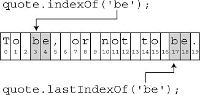

Работа со строкой
Требует знания методов indexOf() и slice()
1) str.indexOf("sub", n)
поиск подстроки "sub" в строке str.
Строка рассматирвается как массив букв и пробелов.
Применив метод к строке мы получаем номер начала подстроки.
Подсчет ведется с 0.
n - необязательный параметр,
позволяет вести поиск с n-го элемента строки/массива.

Первый параметр метода - ОТ // index элемента массива
Втрой параметр (необязательный) - ДО, // ИСКЛЮЧАЯ
2) str.slice(0,3) вернет подстроку с 1-й буквы (0-й элемент) по 3-ю букву (2-й элемент) включительно. Какое это будет слово? Let
И еще кое-что на заметку.
Это может пригодится, но реже:
метод lastIndexOf

slice
И это тоже может пригодится:
Отрицательные индескы